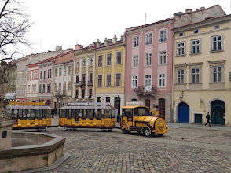
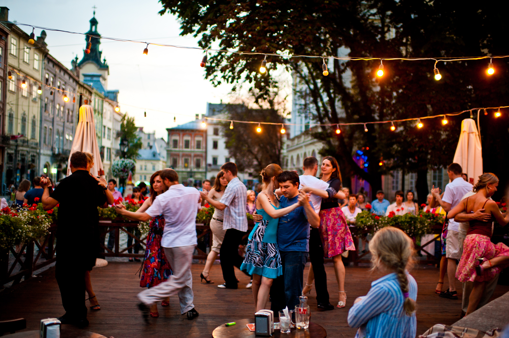

Визнанчні пам'ятки

Площа Ринок — центральна точка міста, оточена 44 унікальними кам'яницями різних епох та стилів. По кутах площі розташовані знамениті фонтани з фігурами грецьких богів
Культура та традиції

В суботу, 30 травня, на Відкритій кав'ярні "Біля Діани на Ринку" буде особливий вечір танго-мілонги. Спеціально до відзначення 100-річчя відомого українського композитора Богдана Весоловського, весь вечір тут танцюватимуть під його музику.